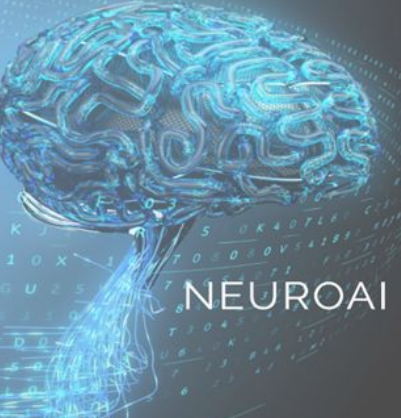

a student interest group for neuro-inspired AI, computational neuroscience, neuroengineering
at ETH Zurich

ETHZ Infracstructure in NeuroAI-related fields
Below is more information regarding the research infrastructure in AI, brain-inspired algorithms/ computational neuroscience and neuroengineering at ETH Zurich
Ecosystems (labs, companies) at ETHZ/ Zurich: here